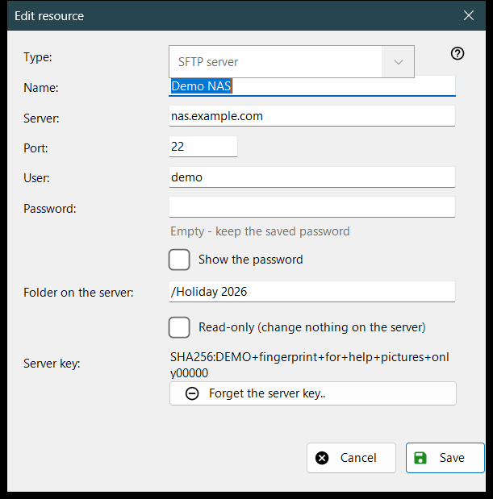
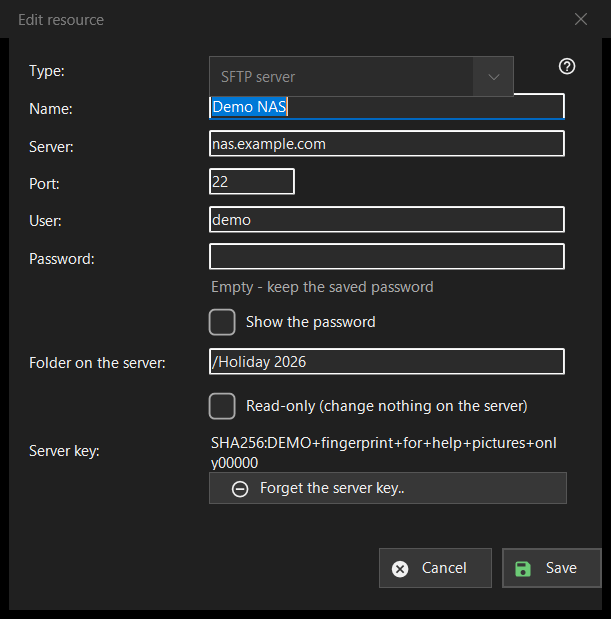

Edit resource
What this is for
The form of one saved server or network folder. «Add..» in the resources list opens it empty with the caption «New resource», «Edit..» opens it filled in as «Edit resource», and an sftp:// address typed in the folder box opens it pre-filled.


In this order
- Choose the type: SFTP server or network folder (SMB).
- Give the resource a name and enter the server address and port, or the network path.
- Enter the user name and the password.
- Set the folder on the server and tick read-only if nothing may change there.
- Press «Save».
The elements
Type
«Type:» is chosen when the resource is created: «SFTP server» (port 22, folder /) or «Network folder (SMB)». For a saved resource the list is disabled, because the stored password and server key belong to one kind. For SMB the address field is captioned «Network folder:» and takes a path like \\server\folder; the port and folder fields are for SFTP only.
Name, server and port
«Name:» is what the list shows; when empty, the server address is used. «Server:» is a name or an IP address and «Port:» a number from 1 to 65535. Changing the server or the port drops the other addresses that came with an imported resource, so a saved password never goes to an address you did not enter.
User and password
«User:» and «Password:». The password is stored encrypted for your Windows account; the list holds only a reference to it. For a saved resource the box is empty with the hint «Empty - keep the saved password»: type something only to replace it. «Show the password» is off at the start. A new resource needs a password.
Folder and read-only
«Folder on the server:» is the folder the viewer opens first, a path starting with /. «Read-only (change nothing on the server)» makes the viewer treat the resource as read-only: no moves or copies into it, no deletes or renames in it.
Server key
«Server key:» shows the fingerprint remembered for this server, or says that it appears at the first connection, where you confirm it. «Forget the server key..» is shown only when a key is remembered. It asks first (the default answer is No) and explains: if the server was reinstalled this is normal, otherwise someone may be impersonating it. It clears only the key: the next connection shows the new fingerprint and asks again.
Save
«Save» checks the fields and names the first problem in red under them: address, port, folder, user name or a missing password. «Cancel» closes the form without changes.